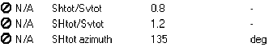
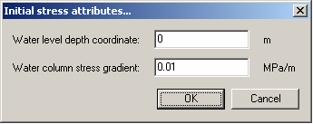
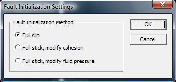

Setup of initial
stresses in GEOMEC
Stress Tensor
When the user supplies a stress tensor (pointset) to the mesh (tetrahedron only) for the Initial Depletion Stage (Boundary\Boundary conditions), these values will be taken as a best estimate for the in situ stresses. Geomec will compute an equilibrium with density and potential boundary conditions and deform when necessary to create an equilibrium. All standard stress initialisation routines will be skipped. Usually the stress tensor will come from a previous calculation, perhaps transformed to a zoom-in model with boundary elements at all sides.
Stress Ratios
Unless stress tensor pointsets are attached to the mesh, Geomec requires the ratios SHtot/Svtot (=sH/sv) and Shtot/Svtot (=sh/sv) for any material model and any formation. It is a simple method to load the material with initial stresses
Where:
sH = highest horizontal stress
sh = lowest horizontal stress
The ratio of sh/sv is basically the frac gradient: the fracture reclosure pressure divided by the (density gradient estimated) vertical stress. This is identical to the fracture gradient divided by the (local) lithostatic gradient. It should not be confused with material dependent K0 ratios which depend on effective stress evolution.
Geomec will put correction strains on the system that return the supplied stress ratios, provided the gravity weight loading is uniaxial, i.e., do not cause horizontal movements in the system due to an imbalance in horizontal stresses.
If the lowest and highest horizontal stresses are different in magnitude a positive azimuth of the sH/sv direction with Northing should be supplied. If the minimum horizontal stress sh is directed in the SW-NE direction (azimuth 45 degrees), then the maximum horizontal stress must be in the NW-SE direction, hence having an azimuth of 135 degrees. This is then the input value.

Figure: Example input in material model
All three parameters can be provided as a pointset to introduce local variations.
Weight of seawater
The header under "Initial Stress" puts a seawater dead weight load onto the system. It assumes that the (mean) sea level is at a certain Depth coordinate, according to the Depth convention of the surfaces. If the sea floor is given a constant depth of 0m, and there is 500 metres of sea water, then the Depth coordinate is -500 (minus 500) metres. The Water column stress gradient (in MPa/m) accounts for the salinity of the water and is usually between 0.0098 and 0.0102 MPa/m.
If the Water level depth coordinate is greater than or equal to (in value) the Sea Floor, the weight of water is ignored. This would be a typical on-shore situation of course.
Geomec puts the (local positive) weight of the water as a boundary condition on the model.

Figure: Example (default) input in Initial Stress
Initial stress routine
The basic initial stress method is applying an effective pre-stress tensor to the matrix. The stress tensor (total stresses minus fluid pressure) works similar to a fluid pressure in supporting the element from collapsing or expanding due to gravity or other loading to the matrix. The element only deforms elastically if the external forces are in unbalance with the internal forces.
If one puts the (effective) stress tensor of a calculation on a mesh, and keeps the material constants and fluid pressure unaltered, the effective deformation of the mesh should be zero, since all stresses are in balance. The applied initial stress is then equal to the provided stress tensor at zero strain, which was the purpose of the exercise.
If the provided initial stresses are not in balance, the mesh will start deforming until balance is reached. The deformation in (present day) Geomec is purely elastic, so ruled by the Young’s modulus and the Poisson’s ratio.
Problem with this approach is that in general the full stress tensors (for each node or element) are unknown. With some luck, the minimum horizontal stress and direction are known from fracture test. With borehole break-outs or ovalisation of a hole, the maximum horizontal stress can sometimes be estimated, where the vertical stress is frequently estimated via an integrated density approach. The information is usually provided as a ratio of stresses.
In Geomec/Diana, the initial stresses are provided via material constants, which can be overwritten by pointset data. The input consists of two ratio’s, KH and Kh and an azimuth, which are
- the ratio of Maximum
Total Horizontal Stress / Total Vertical Stress: KH
- the ratio of Minimum
Total Horizontal Stress / Total Vertical Stress: Kh
- the Azimuth θ of
the Maximum Total Horizontal Stress (clockwise angle) to the North
direction
Basically, this results in a half-stress tensor with 4 entries, provided one of the components (for instance vertical stress) is known. The half-stress tensor assumes that one principal direction is vertical, so that there are no shear components with a Depth relation and is an approximation of the truth.
In Geomec/Diana the following initial stress procedure is applied.
- Load the mesh with
gravity and initial pore pressures in linear elastic calculation mode.
This will lead to a strongly deformed mesh, since most mesh elements will
compact due to gravity. All user supplied “Initial Stress Ratios” will be
ignored in this first iteration. The result is a Total Stress Tensor for
all elements.
- Geomec/Diana will use
the vertical (normal) component (σDD)
to recompute the 5 other entries of the Initial Stress Tensor according to the Initial Stress Ratios. The 2 shear components
with vertical are assumed to be 0, hence assuming one principal stress to
be vertical
- The Initial Stress
tensor is updated applying the user defined initial stress ratios Kh and KH and azimuth:

- An effective Initial
Stress Tensor is calculated by subtracting fluid pressures from the normal
components.

- The new effective
Initial Stress Tensor is attributed to the mesh and the FEM simulation is
repeated. The compaction of the mesh will be much less, since the initial
stress will carry most gravity forces. A new distribution of vertical
stresses will be the effect, given the different deformation pattern.
- Given the updated
distribution of vertical stresses, the Initial Stress Tensor can be
updated in an iterative mode, applying standard Force convergence
criteria. Depending on a maximum number of iterations or the reaching of a
convergence criterion, steps 3 to 5 can be repeated for iteration on the
vertical stress distribution.
- For Linear calculations,
the deformation resulting from fluid pressure and temperature changes is
calculated in the Depletion Stages.
- For Non-linear
calculations, the preconsolidation pressures (cap models) and cohesion
(Mohr Coulomb models) values are updated if necessary, so that all the
stresses that have been calculated in elastic mode can be sustained. If
the user supplied preconsolidation pressure or the cohesion is larger than
the one required to sustain the elastic loading, the user supplied value
will remain unchanged. The effective Initial Stress Tensor from the linear
calculation is put on the mesh for the last time without modification,
which should be almost in balance with external forces. Any remaining
deformation will be nullified prior to the start of the Depletion Stages.
PS. The Iteration procedure compares force changes with gravity forces. Because the force changes might be due to non matching horizontal stresses, bases on the K-ratios, the iteration process does usually not converge to zero. Hence the procedure seems to circle around some value or might even appear to diverge. This is a result of an imperfect unbalance determination, which needs to be improved in future Geomec releases. More than 3-4 iterations is usually not required, where a non-convergence can be ignored for initialization.
Fault stress initialisation
Since stress initialisation (D0) is performed in elastic mode, the faults may build up shear stresses that are higher than cohesion and friction allow. During depletion in non-linear computing mode (D1 and higher), all that energy might be released at once in the first step of the D1, causing numerical instabilities. The user can choose 3 method of stabilising the computations, which will influence the stress levels.

· Assume full slip during stress initialisation only. The faults will have none (or negligible) shear stresses to begin with. Shear stresses can never exceed the plastic limit, so plasticity can only kick in by depletion related stress changes. The assumption of initial shear stresses being zero might not be correct though for the real stress field
· Allow Geomec to alter the cohesion (per triangle / square element) so that the fault strength is always at or below the plastic limit. This approach is similar to the approach of Mohr-Coulomb volume elements.
· Allow Geomec to alter (lower) the initial pore pressure in the fault in case the shear strength is insufficient, so that the fault strength is always at or below the plastic limit. The fault pore pressure will then be increased to the user supplied value in D1, causing the fault to slip in steps. By increasing the number of steps in D1, the computation can be made stable.
See also the Fault Attributes